Попробуй профессию руками
Мастер-классы Инженерного института — короткое погружение в реальные инженерные задачи. Занятия разделены на две программы: для школьников и для студентов СПО.
11 мастер-классов для школьников
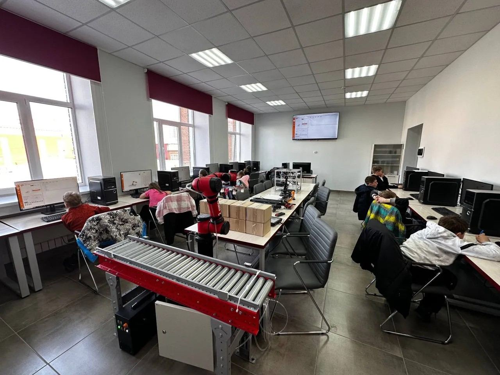
Управление коллаборативным роботом
Ведущий: Блёскин С.С. Робототехника, автоматизация, Индустрия 4.0.
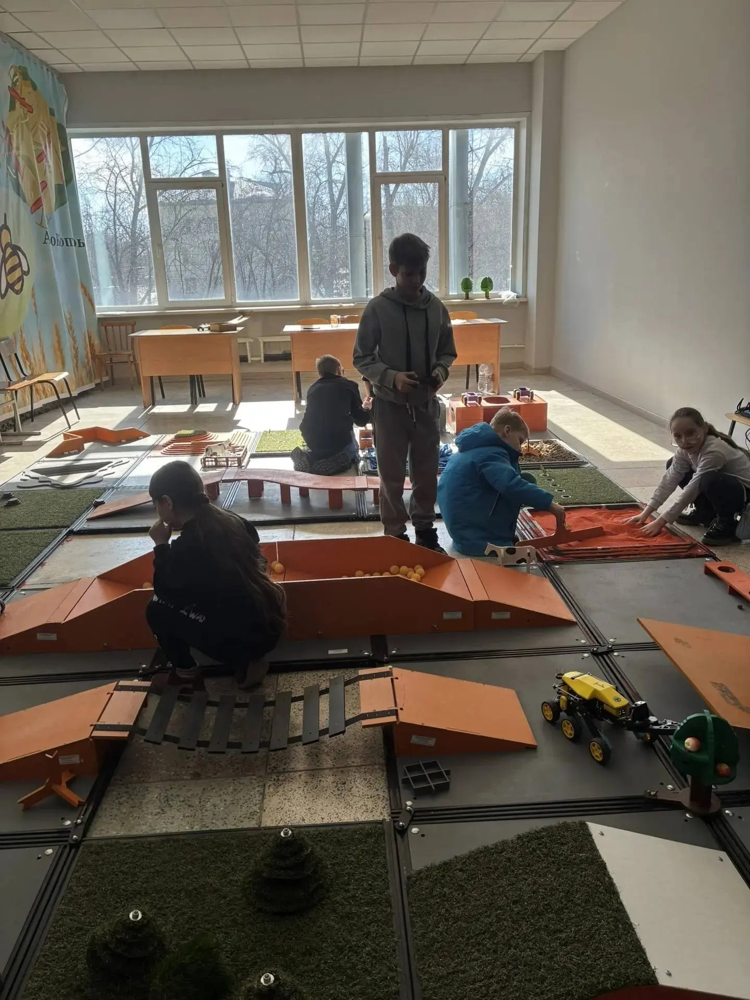
Сборка и пилотирование Агробота
Ведущий: Голиков А.И. Устройство, настройка и управление роботом.
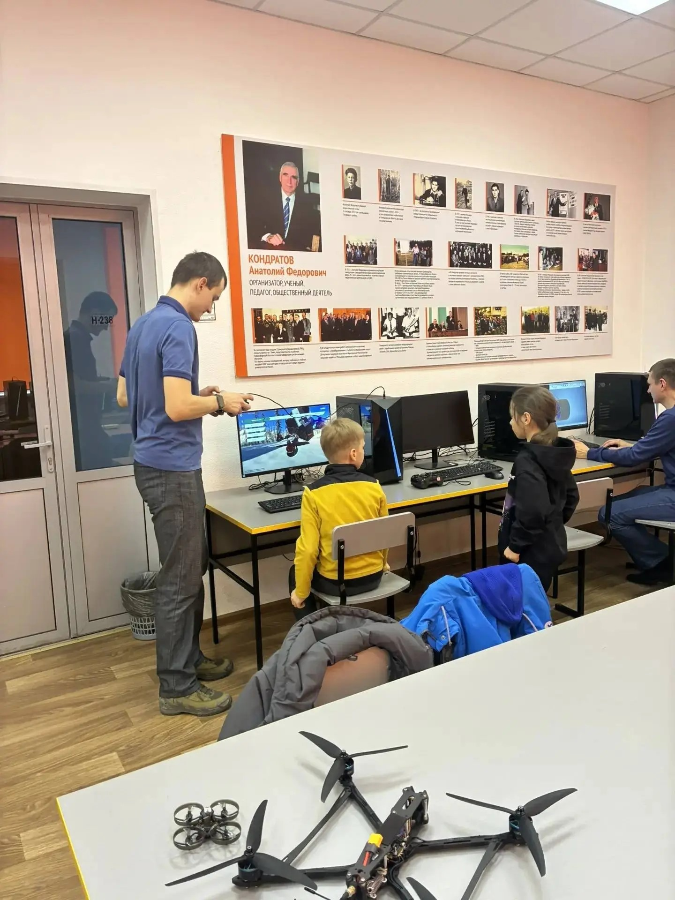
Беспилотно-летательные аппараты
Ведущая: Евсюкова К.В. Устройство дронов и полёт на симуляторе.

Эксперт химмотолог
Ведущий: Крум В.А. Свойства нефтепродуктов и контроль качества.
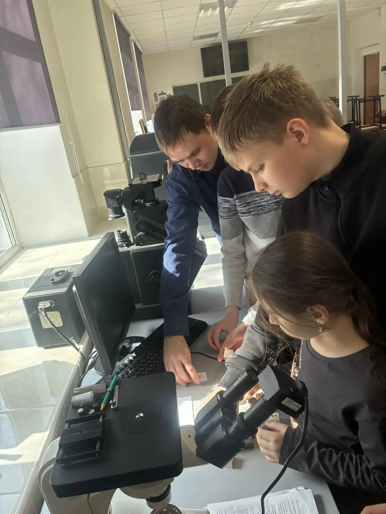
Путешествие в мир материалов
Ведущий: Пчельников А.В. Металлы, полимеры, керамика, композиты.
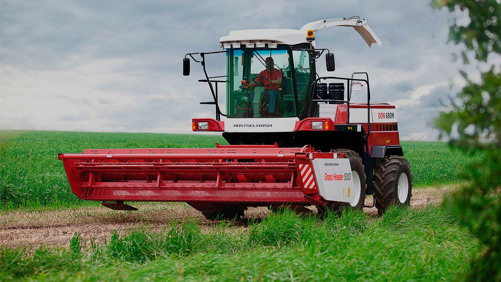
Управление энергонасыщенным трактором
Ведущий: Крум В.А. Кабина комбайна, органы управления, автопилот.
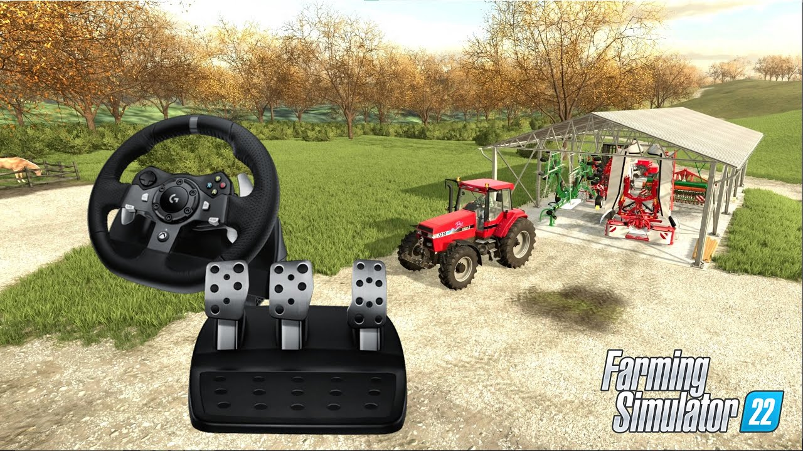
Рулим фермой: СХ упражнения в симуляторе
Симуляция агроработ в Farming Simulator с игровым рулём.
Арт-техники психологической самопомощи
Скетчинг, коллаж, мандала. Простые техники для снятия стресса.
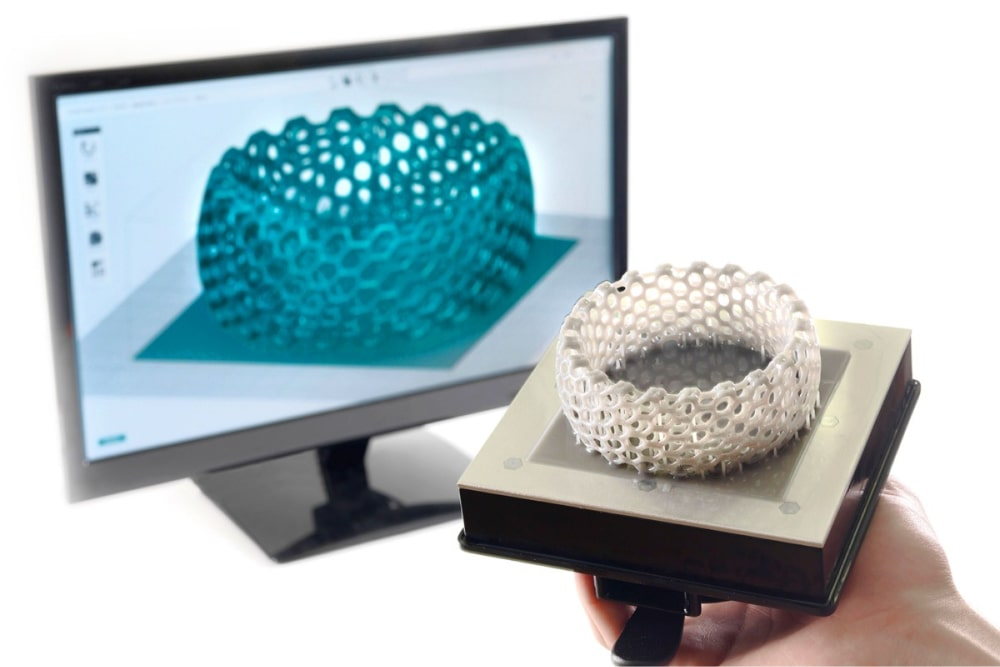
Агро-дизайн: от 3D-модели до яркой фермы
3D-печать СХ животных и художественное раскрашивание.
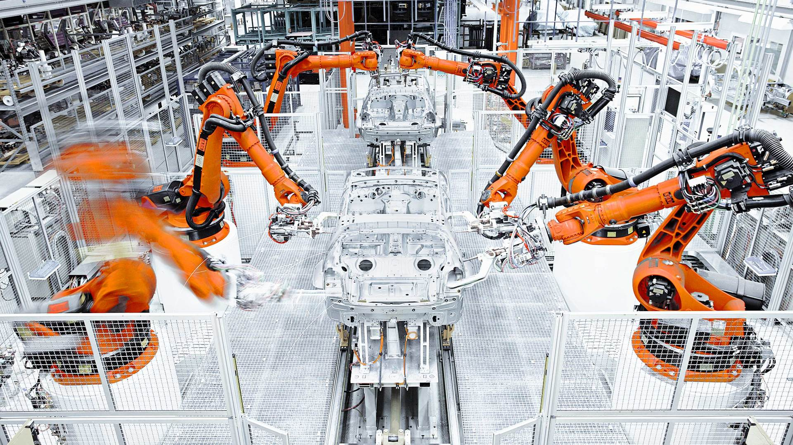
Оживи машину: робот-манипулятор
Сборка и программирование робота для операций захвата и сортировки.
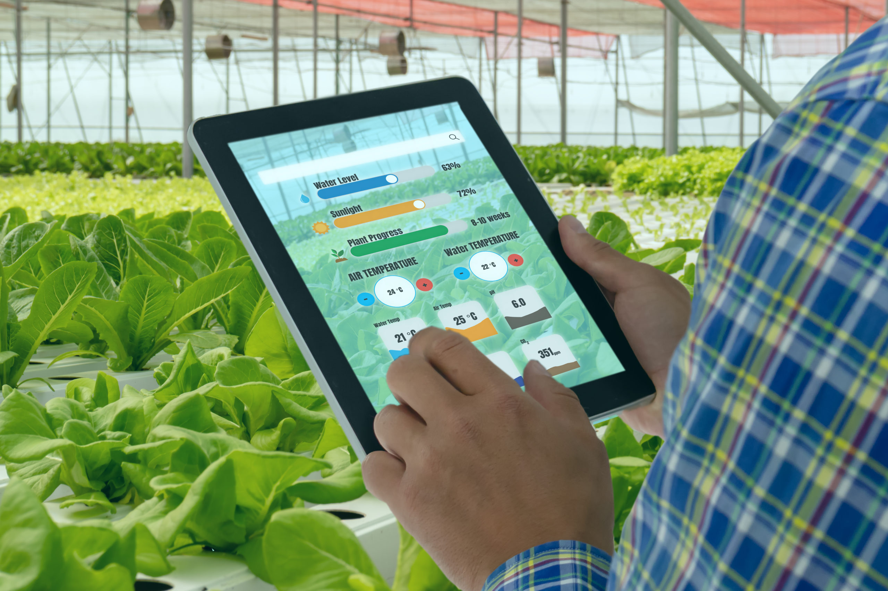
Умная теплица: от идеи к работе
Автоматизация микроклимата: датчики, реле, контроллер (МГБот).
11 мастер-классов для студентов среднего профессионального образования
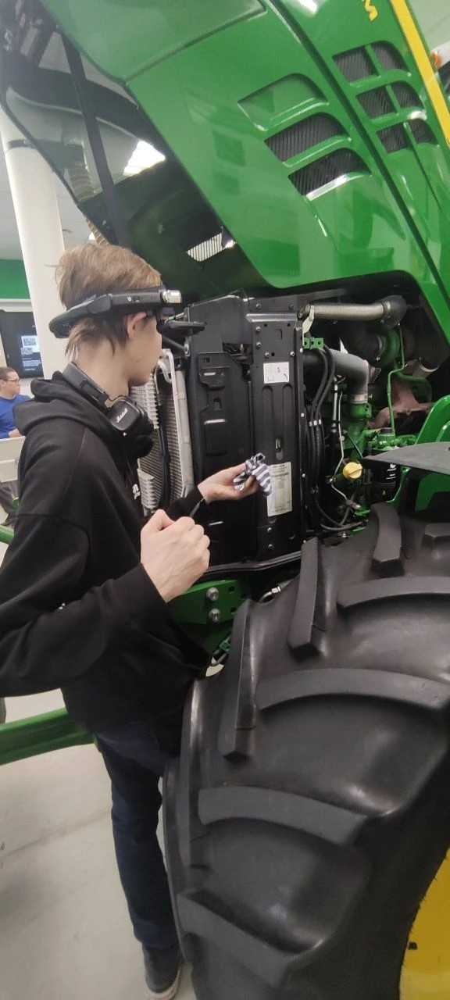
Цифровой ассистент инженера
Ведущий: Домнышев Д.А. IT-технологии в обслуживании техники АПК.
Эксперт химмотолог
Ведущий: Крум В.А. Свойства нефтепродуктов и контроль качества.
Беспилотно-летательные аппараты
Ведущая: Евсюкова К.В. Устройство дронов и полёт на симуляторе.
Управление коллаборативным роботом
Ведущий: Блёскин С.С. Робототехника, автоматизация, Индустрия 4.0.
Арт-техники психологической самопомощи
Скетчинг, коллаж, мандала. Простые техники для снятия стресса.
Агро-дизайн: от 3D-модели до яркой фермы
3D-печать СХ животных и художественное раскрашивание.
Оживи машину: робот-манипулятор
Сборка и программирование робота для операций захвата и сортировки.
Умная теплица: от идеи к работе
Автоматизация микроклимата: датчики, реле, контроллер (МГБот).
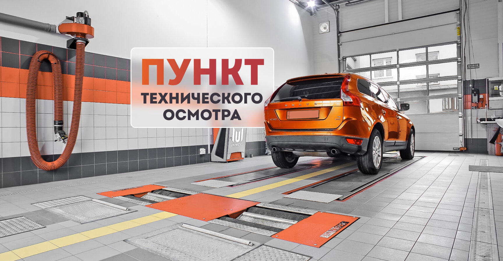
ПТО: первый осмотр
Планово-техническое обслуживание техники по регламенту.
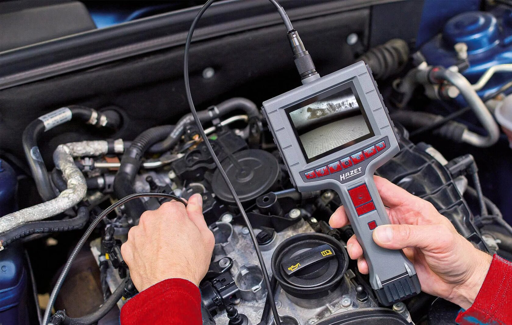
Лаборатория ДВС: запускаем и диагностируем
Запуск двигателя внутреннего сгорания и экспресс-диагностика.

Практика кузовного ремонта
Ведущий: Вертей М.Л. Правка, шпатлёвка, шлифовка кузова техники.
Направления подготовки
Инженерный институт готовит бакалавров и магистров по следующим направлениям.
35.03.06 Агроинженерия
Бакалавриат · 145 бюджетных мест
Инженер-механик, инженер по эксплуатации машин, инженер по техническому обслуживанию и ремонту машин.
Профили
- Технические системы и цифровизация производства
- Сервис технических систем
- Технические системы и роботизация пищевых производств
- Электрооборудование и электротехнологии
- Беспилотные системы в АПК (новый)
Вступительные испытания
Математика (профиль), русский язык, физика/информатика/химия/биология/география.
23.03.03 Эксплуатация транспортно-технологических машин и комплексов
Бакалавриат · профиль: Автомобильный сервис
Механик по выпуску автомобилей, автоэксперт, инженер по мехатронным системам, мастер-приёмщик сервисного центра.
Вступительные испытания
Математика (профиль), русский язык, физика/информатика/химия.
44.03.04 Профессиональное обучение (по отраслям)
Бакалавриат · 27 бюджетных мест
Профиль: Технические системы и эксплуатация машин. Мастер производственного обучения, преподаватель специальных дисциплин, методист.
Вступительные испытания
Обществознание, русский язык, математика/физика/иностранный/информатика/химия/биология/география/история.
35.03.07 Технология производства и переработки сельскохозяйственной продукции
Бакалавриат · 30 бюджетных мест
Профиль: Обеспечение и контроль качества пищевой продукции. Технолог, инженер по качеству, эксперт-аудитор, лаборант-технолог.
Вступительные испытания
Биология, русский язык, математика/физика/информатика/химия/география.
23.04.03 Эксплуатация транспортно-технологических машин и комплексов
Магистратура · 7 мест, очная форма
Профиль: Техническая эксплуатация автомобилей.
35.04.06 Агроинженерия
Магистратура · 40 очно + 18 заочно
Профиль: IT-менеджмент в агроинженерии.
Поступление на базе СПО
Информация для выпускников учреждений среднего профессионального образования — приём 2026 года.
📅 Сроки
- Приём документов: с 20 июня по 20 июля 2026 года
- Вступительные испытания: с 27 июня по 25 июля 2026
- Дни испытаний: каждая среда и суббота, 10:00
- Включение в список: автоматически в день регистрации заявления
📄 Документы
- Паспорт (копии страниц с личными данными и регистрацией)
- Диплом СПО с приложением (оригинал или копия)
- Копия СНИЛС
- Фотографии 4 шт. (матовые, 3×4 см)
- Медицинская справка (офтальмолог, оториноларинголог)
- Документы на льготы (при наличии)
📝 Вступительные испытания
Для выпускников СПО — компьютерное тестирование, проводимое вузом самостоятельно. Результаты ЕГЭ не обязательны.
35.03.06 Агроинженерия
- Информационные технологии в профдеятельности — мин. 46
- Русский язык — мин. 40
- Инженерная графика или Метрология и технические измерения — мин. 44
23.03.03 Эксплуатация транспортно-технологических машин
- Информационные технологии в профдеятельности — мин. 46
- Русский язык — мин. 40
- Инженерная графика или Метрология и технические измерения — мин. 44
35.03.07 Технология производства и переработки с/х продукции
- Информационные технологии в профдеятельности — мин. 46
- Русский язык — мин. 40
- Основы животноводства или Биология животных — мин. 40
44.03.04 Профессиональное обучение (по отраслям)
- Информационные технологии в профдеятельности — мин. 46
- Русский язык — мин. 40
- Инженерная графика или Метрология и технические измерения — мин. 44
🎓 Бюджетные места (СПО)
- 35.03.06 Агроинженерия: 145 очно + 80 заочно
- 23.03.03 Эксплуатация транспортно-технологических машин: 60 очно + 30 заочно
- 35.03.07 Технология производства и переработки с/х продукции: 30 очно + 25 заочно
- 44.03.04 Профессиональное обучение: 27 очно
📞 Контакты приёмной комиссии
- Адрес: 630039, г. Новосибирск, ул. Добролюбова, 160, 3 этаж
- Телефон: +7 (383) 316-20-14
- Сайт: edubiotech.ru